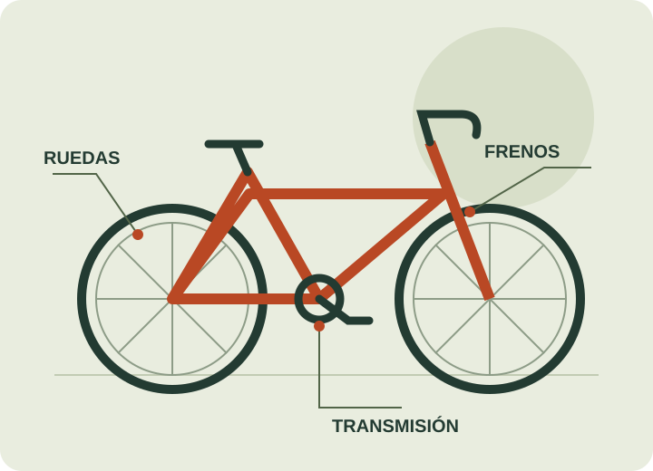

Mantenimiento general
Revisión, limpieza y ajustes de los componentes de la bicicleta.
DEL TALLER A TU PRÓXIMA RUTA
Mantenimiento de bicicletas con recolección y entrega a domicilio. Un primer paso sencillo para coordinar el cuidado de tu bici.
Esta es una demostración: no se envían solicitudes.

SERVICIOS TÉCNICOS
Revisión, limpieza y ajustes de los componentes de la bicicleta.
Revisión del frenado, los cambios y el funcionamiento de la cadena.
Una revisión inicial para identificar qué atención necesita tu bicicleta.
SERVICIO A DOMICILIO
El cliente comparte qué necesita su bicicleta.
El taller confirma cobertura, horario y condiciones.
Se realiza el diagnóstico y se acuerda el trabajo.
Se coordina el regreso de la bicicleta a domicilio.